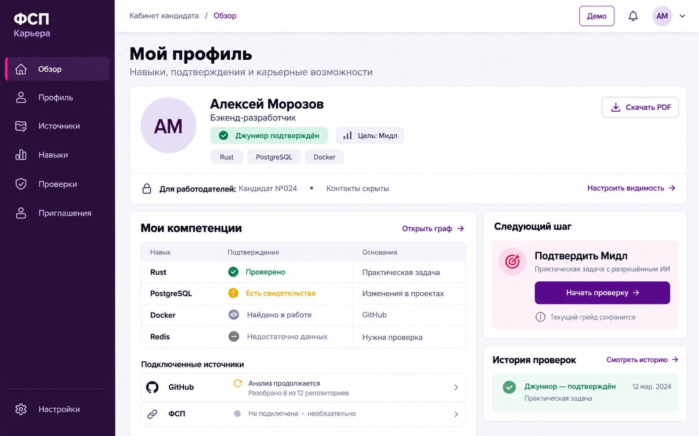
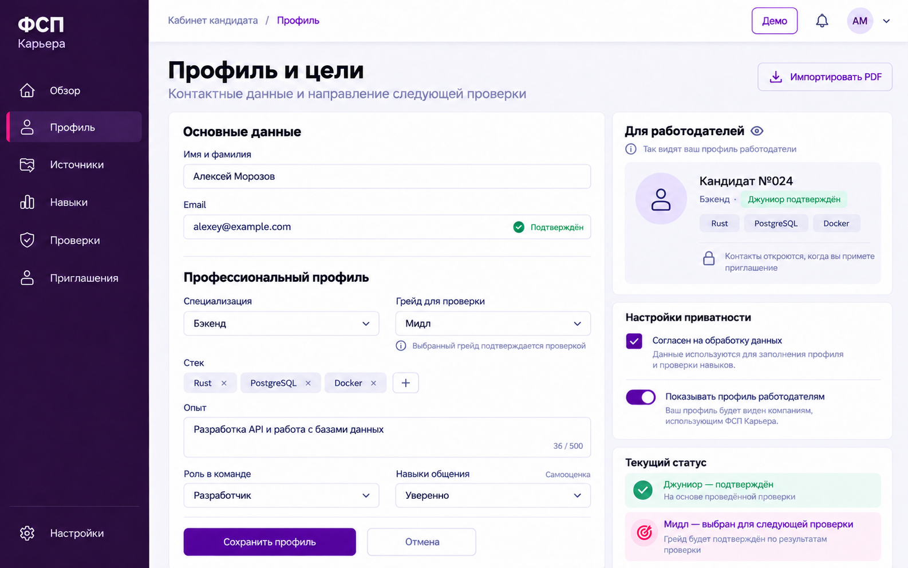
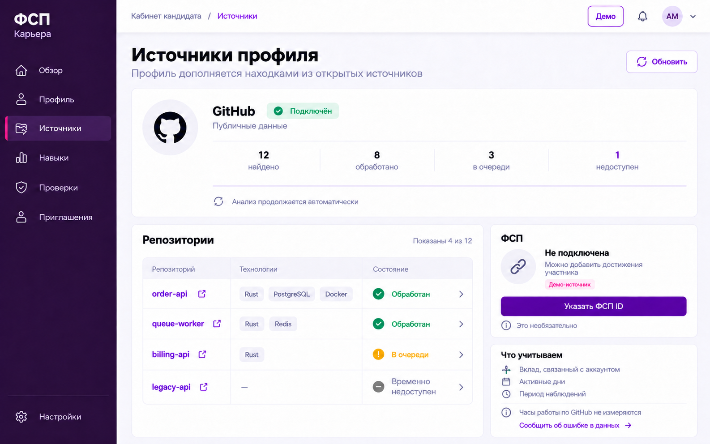
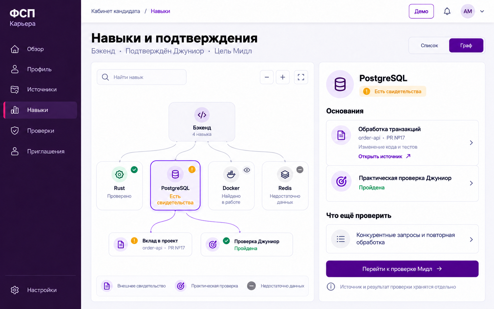
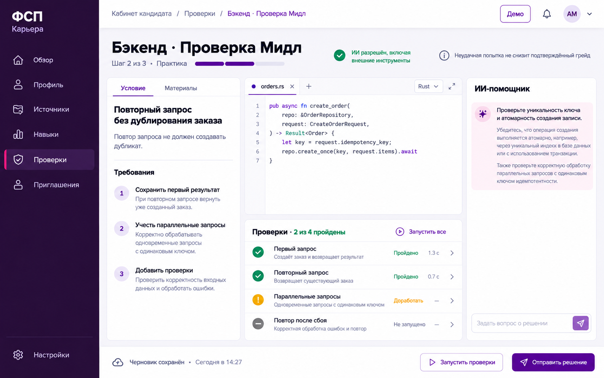
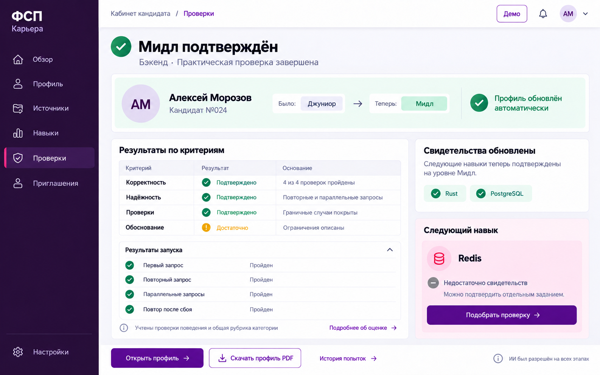
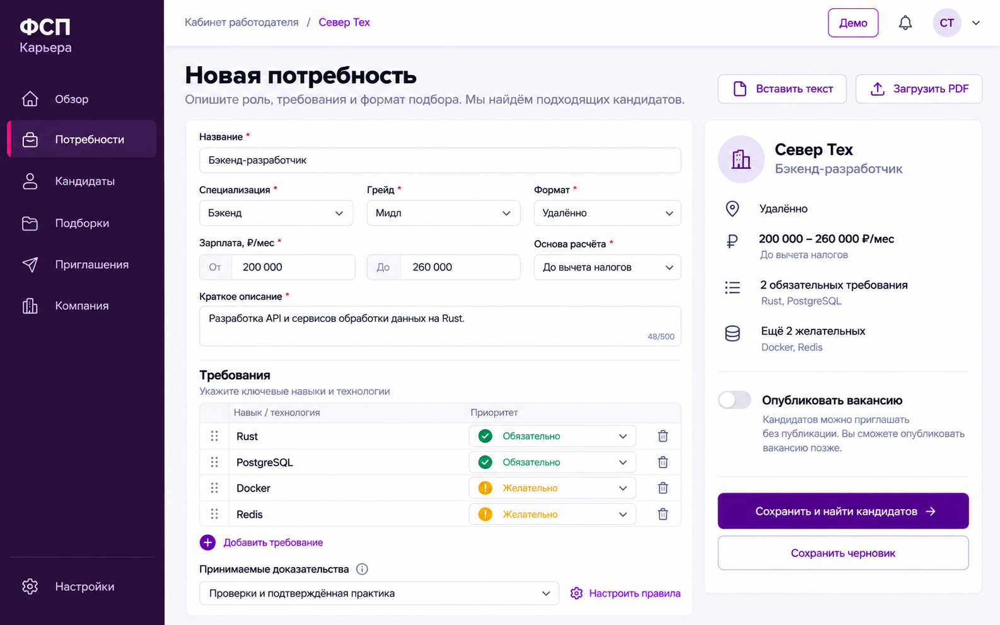
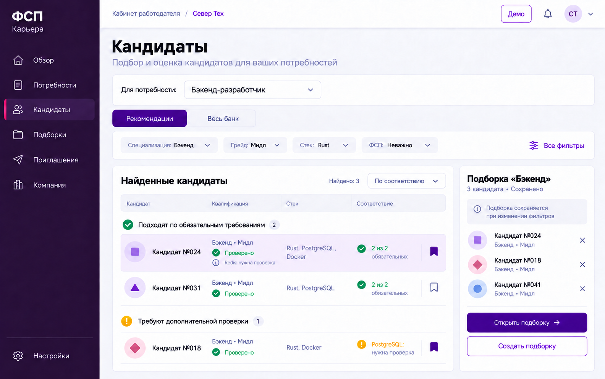
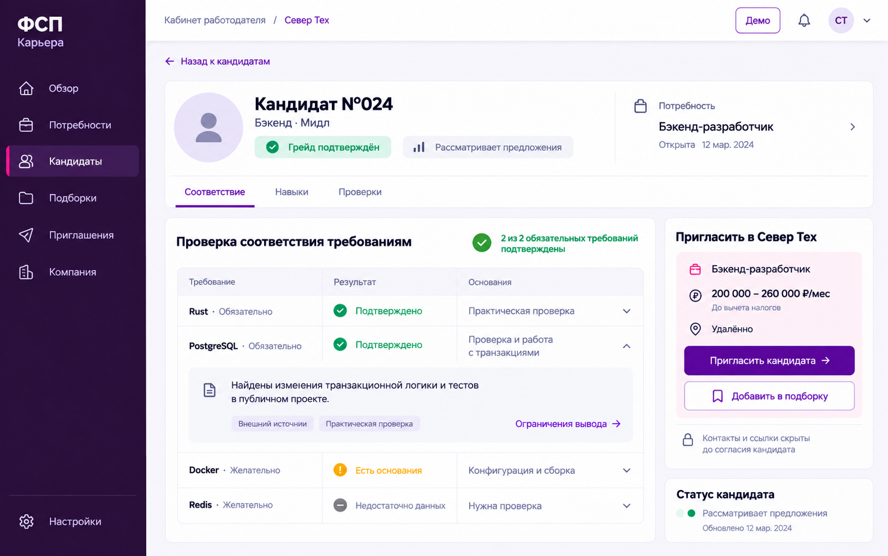
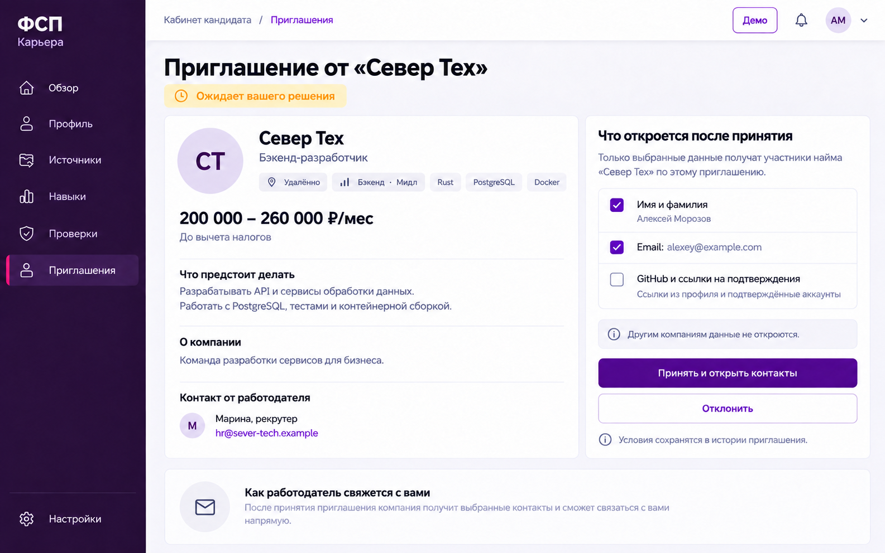

Как пользоваться. Откройте изображение для просмотра в исходном размере. Точное поведение, поля и состояния описаны в документах пакета. Даты и подписи в изображениях не заменяют API-контракт. Страницы 01–05 показывают профиль до повышения, 06–10 продолжают сценарий после подтверждения уровня Мидл.

















